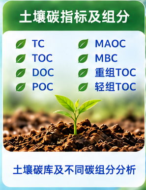

6PPD-Q 类及相关目标物
面向轮胎源污染物、转化产物及其他特定有机目标物的科研检测需求，按目标物和样品基质匹配分析路线。
面向不适合直接套用现有标准方法的科研检测需求，根据样品基质、目标物、浓度范围和研究目的，设计前处理、仪器条件、定量路线与质量控制方案。常规可选方向可直接加入需求清单，特殊项目再进行方法开发与技术评估。
以下为典型需求入口。具体目标物、样品量、检出需求、前处理与仪器条件需根据项目逐项确认。
面向轮胎源污染物、转化产物及其他特定有机目标物的科研检测需求，按目标物和样品基质匹配分析路线。
面向水、土壤、沉积物、材料及其他样品中的重金属和元素含量分析，按研究目的确认元素范围与消解方案。
围绕土壤碳相关指标、不同碳库或组分的科研检测需求进行项目匹配，并结合实验设计组织结果。
针对特殊基质、新目标物或非标准科研问题，支持前处理、仪器条件、校准、质量控制和数据交付方案定制。
围绕 TC、TOC、DOC、POC、MAOC、MBC、重组 TOC、轻组 TOC 等指标，根据土壤类型、研究目的和样品条件确定测试组合与前处理方案。该方向作为“检测方法开发”板块的典型示例，不限制其他定制检测项目。

当现成项目无法直接覆盖研究问题时，先做方法可行性和样品基质评估，再确定正式检测方案。
例如新兴转化产物、复杂环境样品、特殊生物或材料基质，需要重新确认提取、净化、分离与检测条件。
当项目涉及多处理组、时间序列、标准曲线、回收率、空白与质量控制时，可按论文或课题需求设计完整数据链路。
从需求澄清开始，先判断可行性，再进入方法条件、质量控制与正式样品分析。
目标物、样品类型、样本量、预期浓度与研究目的。
确认前处理、分析平台、干扰因素与可行性。
优化提取、净化、分离、检测和定量条件。
根据项目需要设置空白、标准曲线、加标或重复测定。
完成样品分析并按科研用途整理结果、图表与说明。
检测方案、方法开发、技术路线与数据分析咨询，请添加技术企业微信。
 建议备注：官网专题 + 单位 + 目标物/研究方向
建议备注：官网专题 + 单位 + 目标物/研究方向样品、检测项目、送样、报价、合同与进度需求，请添加表征&检测企业微信。
 建议准备：样品类型 · 数量 · 目标物/指标 · 期望周期
建议准备：样品类型 · 数量 · 目标物/指标 · 期望周期